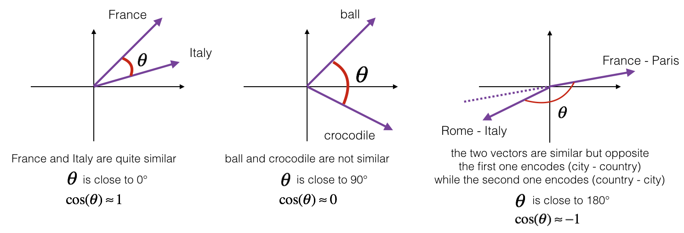
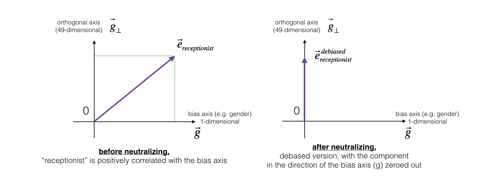
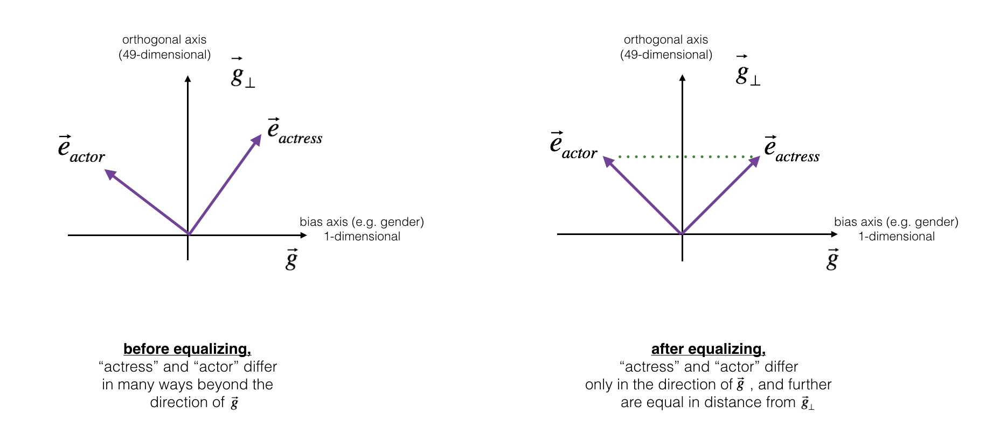

Operations on word vectors
Welcome to your first assignment of this week!
Because word embeddings are very computionally expensive to train, most ML practitioners will load a pre-trained set of embeddings.
After this assignment you will be able to:
- Load pre-trained word vectors, and measure similarity using cosine similarity
- Use word embeddings to solve word analogy problems such as Man is to Woman as King is to __.
- Modify word embeddings to reduce their gender bias
Let’s get started! Run the following cell to load the packages you will need.
1 | import numpy as np |
Using TensorFlow backend.
Next, lets load the word vectors. For this assignment, we will use 50-dimensional GloVe vectors to represent words. Run the following cell to load the word_to_vec_map.
1 | words, word_to_vec_map = read_glove_vecs('../../readonly/glove.6B.50d.txt') |
You’ve loaded:
words: set of words in the vocabulary.word_to_vec_map: dictionary mapping words to their GloVe vector representation.
You’ve seen that one-hot vectors do not do a good job cpaturing what words are similar. GloVe vectors provide much more useful information about the meaning of individual words. Lets now see how you can use GloVe vectors to decide how similar two words are.
1 - Cosine similarity
To measure how similar two words are, we need a way to measure the degree of similarity between two embedding vectors for the two words. Given two vectors $u$ and $v$, cosine similarity is defined as follows:
where $u.v$ is the dot product (or inner product) of two vectors, $||u||_2$ is the norm (or length) of the vector $u$, and $\theta$ is the angle between $u$ and $v$. This similarity depends on the angle between $u$ and $v$. If $u$ and $v$ are very similar, their cosine similarity will be close to 1; if they are dissimilar, the cosine similarity will take a smaller value.

Exercise: Implement the function cosine_similarity() to evaluate similarity between word vectors.
Reminder: The norm of $u$ is defined as $ ||u||_2 = \sqrt{\sum_{i=1}^{n} u_i^2}$
1 | # GRADED FUNCTION: cosine_similarity |
1 | father = word_to_vec_map["father"] |
cosine_similarity(father, mother) = 0.890903844289
cosine_similarity(ball, crocodile) = 0.274392462614
cosine_similarity(france - paris, rome - italy) = -0.675147930817
Expected Output:
| **cosine_similarity(father, mother)** = | 0.890903844289 |
| **cosine_similarity(ball, crocodile)** = | 0.274392462614 |
| **cosine_similarity(france - paris, rome - italy)** = | -0.675147930817 |
After you get the correct expected output, please feel free to modify the inputs and measure the cosine similarity between other pairs of words! Playing around the cosine similarity of other inputs will give you a better sense of how word vectors behave.
2 - Word analogy task
In the word analogy task, we complete the sentence “a is to b as c is to ____“. An example is ‘man is to woman as king is to queen‘ . In detail, we are trying to find a word d, such that the associated word vectors $e_a, e_b, e_c, e_d$ are related in the following manner: $e_b - e_a \approx e_d - e_c$. We will measure the similarity between $e_b - e_a$ and $e_d - e_c$ using cosine similarity.
Exercise: Complete the code below to be able to perform word analogies!
1 | # GRADED FUNCTION: complete_analogy |
Run the cell below to test your code, this may take 1-2 minutes.
1 | triads_to_try = [('italy', 'italian', 'spain'), ('india', 'delhi', 'japan'), ('man', 'woman', 'boy'), ('small', 'smaller', 'large')] |
italy -> italian :: spain -> spanish
india -> delhi :: japan -> tokyo
man -> woman :: boy -> girl
small -> smaller :: large -> larger
Expected Output:
| **italy -> italian** :: | spain -> spanish |
| **india -> delhi** :: | japan -> tokyo |
| **man -> woman ** :: | boy -> girl |
| **small -> smaller ** :: | large -> larger |
Once you get the correct expected output, please feel free to modify the input cells above to test your own analogies. Try to find some other analogy pairs that do work, but also find some where the algorithm doesn’t give the right answer: For example, you can try small->smaller as big->?.
Congratulations!
You’ve come to the end of this assignment. Here are the main points you should remember:
- Cosine similarity a good way to compare similarity between pairs of word vectors. (Though L2 distance works too.)
- For NLP applications, using a pre-trained set of word vectors from the internet is often a good way to get started.
Even though you have finished the graded portions, we recommend you take a look too at the rest of this notebook.
Congratulations on finishing the graded portions of this notebook!
3 - Debiasing word vectors (OPTIONAL/UNGRADED)
In the following exercise, you will examine gender biases that can be reflected in a word embedding, and explore algorithms for reducing the bias. In addition to learning about the topic of debiasing, this exercise will also help hone your intuition about what word vectors are doing. This section involves a bit of linear algebra, though you can probably complete it even without being expert in linear algebra, and we encourage you to give it a shot. This portion of the notebook is optional and is not graded.
Lets first see how the GloVe word embeddings relate to gender. You will first compute a vector $g = e_{woman}-e_{man}$, where $e_{woman}$ represents the word vector corresponding to the word woman, and $e_{man}$ corresponds to the word vector corresponding to the word man. The resulting vector $g$ roughly encodes the concept of “gender”. (You might get a more accurate representation if you compute $g_1 = e_{mother}-e_{father}$, $g_2 = e_{girl}-e_{boy}$, etc. and average over them. But just using $e_{woman}-e_{man}$ will give good enough results for now.)
1 | g = word_to_vec_map['woman'] - word_to_vec_map['man'] |
[-0.087144 0.2182 -0.40986 -0.03922 -0.1032 0.94165
-0.06042 0.32988 0.46144 -0.35962 0.31102 -0.86824
0.96006 0.01073 0.24337 0.08193 -1.02722 -0.21122
0.695044 -0.00222 0.29106 0.5053 -0.099454 0.40445
0.30181 0.1355 -0.0606 -0.07131 -0.19245 -0.06115
-0.3204 0.07165 -0.13337 -0.25068714 -0.14293 -0.224957
-0.149 0.048882 0.12191 -0.27362 -0.165476 -0.20426
0.54376 -0.271425 -0.10245 -0.32108 0.2516 -0.33455
-0.04371 0.01258 ]
Now, you will consider the cosine similarity of different words with $g$. Consider what a positive value of similarity means vs a negative cosine similarity.
1 | print ('List of names and their similarities with constructed vector:') |
List of names and their similarities with constructed vector:
john -0.23163356146
marie 0.315597935396
sophie 0.318687898594
ronaldo -0.312447968503
priya 0.17632041839
rahul -0.169154710392
danielle 0.243932992163
reza -0.079304296722
katy 0.283106865957
yasmin 0.233138577679
As you can see, female first names tend to have a positive cosine similarity with our constructed vector $g$, while male first names tend to have a negative cosine similarity. This is not suprising, and the result seems acceptable.
But let’s try with some other words.
1 | print('Other words and their similarities:') |
Other words and their similarities:
lipstick 0.276919162564
guns -0.18884855679
science -0.0608290654093
arts 0.00818931238588
literature 0.0647250443346
warrior -0.209201646411
doctor 0.118952894109
tree -0.0708939917548
receptionist 0.330779417506
technology -0.131937324476
fashion 0.0356389462577
teacher 0.179209234318
engineer -0.0803928049452
pilot 0.00107644989919
computer -0.103303588739
singer 0.185005181365
Do you notice anything surprising? It is astonishing how these results reflect certain unhealthy gender stereotypes. For example, “computer” is closer to “man” while “literature” is closer to “woman”. Ouch!
We’ll see below how to reduce the bias of these vectors, using an algorithm due to Boliukbasi et al., 2016. Note that some word pairs such as “actor”/“actress” or “grandmother”/“grandfather” should remain gender specific, while other words such as “receptionist” or “technology” should be neutralized, i.e. not be gender-related. You will have to treat these two type of words differently when debiasing.
3.1 - Neutralize bias for non-gender specific words
The figure below should help you visualize what neutralizing does. If you’re using a 50-dimensional word embedding, the 50 dimensional space can be split into two parts: The bias-direction $g$, and the remaining 49 dimensions, which we’ll call $g_{\perp}$. In linear algebra, we say that the 49 dimensional $g_{\perp}$ is perpendicular (or “othogonal”) to $g$, meaning it is at 90 degrees to $g$. The neutralization step takes a vector such as $e_{receptionist}$ and zeros out the component in the direction of $g$, giving us $e_{receptionist}^{debiased}$.
Even though $g_{\perp}$ is 49 dimensional, given the limitations of what we can draw on a screen, we illustrate it using a 1 dimensional axis below.

Exercise: Implement neutralize() to remove the bias of words such as “receptionist” or “scientist”. Given an input embedding $e$, you can use the following formulas to compute $e^{debiased}$:
If you are an expert in linear algebra, you may recognize $e^{bias_component}$ as the projection of $e$ onto the direction $g$. If you’re not an expert in linear algebra, don’t worry about this.
1 | def neutralize(word, g, word_to_vec_map): |
1 | e = "receptionist" |
cosine similarity between receptionist and g, before neutralizing: 0.330779417506
cosine similarity between receptionist and g, after neutralizing: -0.48975521526
Expected Output: The second result is essentially 0, up to numerical roundof (on the order of $10^{-17}$).
| **cosine similarity between receptionist and g, before neutralizing:** : | 0.330779417506 |
| **cosine similarity between receptionist and g, after neutralizing:** : | -3.26732746085e-17 |
3.2 - Equalization algorithm for gender-specific words
Next, lets see how debiasing can also be applied to word pairs such as “actress” and “actor.” Equalization is applied to pairs of words that you might want to have differ only through the gender property. As a concrete example, suppose that “actress” is closer to “babysit” than “actor.” By applying neutralizing to “babysit” we can reduce the gender-stereotype associated with babysitting. But this still does not guarantee that “actor” and “actress” are equidistant from “babysit.” The equalization algorithm takes care of this.
The key idea behind equalization is to make sure that a particular pair of words are equi-distant from the 49-dimensional $g_\perp$. The equalization step also ensures that the two equalized steps are now the same distance from $e_{receptionist}^{debiased}$, or from any other work that has been neutralized. In pictures, this is how equalization works:

The derivation of the linear algebra to do this is a bit more complex. (See Bolukbasi et al., 2016 for details.) But the key equations are:
Exercise: Implement the function below. Use the equations above to get the final equalized version of the pair of words. Good luck!
1 | def equalize(pair, bias_axis, word_to_vec_map): |
1 | print("cosine similarities before equalizing:") |
Expected Output:
cosine similarities before equalizing:
| **cosine_similarity(word_to_vec_map["man"], gender)** = | -0.117110957653 |
| **cosine_similarity(word_to_vec_map["woman"], gender)** = | 0.356666188463 |
cosine similarities after equalizing:
| **cosine_similarity(u1, gender)** = | -0.700436428931 |
| **cosine_similarity(u2, gender)** = | 0.700436428931 |
Please feel free to play with the input words in the cell above, to apply equalization to other pairs of words.
These debiasing algorithms are very helpful for reducing bias, but are not perfect and do not eliminate all traces of bias. For example, one weakness of this implementation was that the bias direction $g$ was defined using only the pair of words _woman_ and _man_. As discussed earlier, if $g$ were defined by computing $g_1 = e_{woman} - e_{man}$; $g_2 = e_{mother} - e_{father}$; $g_3 = e_{girl} - e_{boy}$; and so on and averaging over them, you would obtain a better estimate of the “gender” dimension in the 50 dimensional word embedding space. Feel free to play with such variants as well.
Congratulations
You have come to the end of this notebook, and have seen a lot of the ways that word vectors can be used as well as modified.
Congratulations on finishing this notebook!
References:
- The debiasing algorithm is from Bolukbasi et al., 2016, Man is to Computer Programmer as Woman is to
Homemaker? Debiasing Word Embeddings - The GloVe word embeddings were due to Jeffrey Pennington, Richard Socher, and Christopher D. Manning. (https://nlp.stanford.edu/projects/glove/)